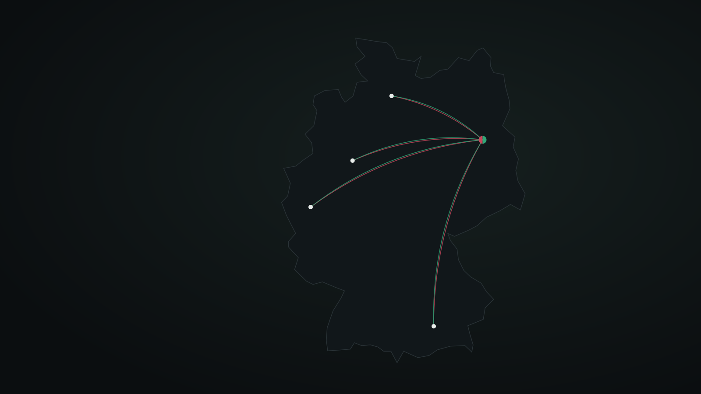

Fokus Innovation
Das Innovations-Format von Make.One.
Ausgewählte Abende für Menschen, die Neues in den Markt bringen — und für die, die dort entscheiden. Eine kleine Runde, ein besonderer Ort, Gespräche mit Substanz.
Film

Innovation braucht Umsetzung. Und Sichtbarkeit.
Gute Ideen gibt es in Deutschland genug. Was fehlt, sind die Momente, in denen die richtigen Menschen sich begegnen: wer Neues baut — und wer Erfahrung, Zugang und Urteilsvermögen mitbringt.
Fokus Innovation schafft diese Momente. Nicht als Konferenz, nicht als Messe, sondern als Abend in kleiner Runde — mit Zeit für das Gespräch, das sonst zwischen zwei Terminen untergeht.
-
Umsetzung vor Bühne
Wir sprechen über das, was in den Markt soll — und über den Weg dorthin. Weniger Vortrag, mehr Austausch.
-
Generationen an einem Tisch
Junge Gründerinnen und Gründer neben erfahrenen Unternehmerinnen, Unternehmern und Führungskräften. Tempo trifft Erfahrung.
-
Ausgewählte Orte, kleine Runden
Ein Penthouse, ein Rooftop, ein Raum mit Blick — ruhig, hochwertig, mit klaren Linien. Die Gäste laden wir persönlich ein.
Ein Abend, vier Teile.
Ablauf, Ort und Gäste stimmen wir für jede Stadt eigens ab — das hier ist der Rahmen.
-
Ankommen
Ein ruhiger Beginn: Begrüßung, erste Gespräche, der Blick über die Stadt.
-
Impuls
Ein kurzer Anstoß aus der Praxis — eine Frage, an der jemand gerade wirklich arbeitet.
-
Gespräche am Tisch
Kleine Runden, gemischt nach Erfahrung und Branche. Hier entsteht, was keiner allein schafft.
-
Ausklang
Zeit für die Gespräche, die bleiben — und für die Verabredung danach.
Aus Berlin in sechs Städte.
MAKE kommt aus Berlin. Von hier aus verbindet Make.One Entscheiderinnen und Entscheider in ganz Deutschland — Fokus Innovation ist dort zu Gast, wo sie arbeiten.
- BerlinTermin in PlanungFür Berlin anfragen
- HamburgTermin in PlanungFür Hamburg anfragen
- BielefeldTermin in PlanungFür Bielefeld anfragen
- KölnTermin in PlanungFür Köln anfragen
- MünchenTermin in PlanungFür München anfragen
- DresdenTermin in PlanungFür Dresden anfragen
Die Termine stehen noch nicht fest. Wer anfragt, hört als Erstes von uns, sobald ein Abend in seiner Stadt geplant ist.
Teilnahme anfragen.
Fokus Innovation ist eine Runde auf Einladung. Schreib uns kurz, wer du bist, woran du arbeitest und in welcher Stadt du dabei sein möchtest — wir melden uns persönlich.
Kein Formular, kein Konto — nur eine Mail an hello@makeinnovation.de.
- Namedamit wir dich persönlich ansprechen.
- Unternehmen und Rolledamit die Runde gut gemischt ist.
- StadtBerlin, Hamburg, Bielefeld, Köln, München oder Dresden.
- Woran du gerade arbeitestein, zwei Sätze genügen.
Ein Format von Make.One.
Make.One ist das Netzwerk von MAKE Innovation für junge und erfahrene Entscheider der Wirtschaft. Fokus Innovation ist seine Reihe rund um Innovation — gegründet von Malin und Kevin, mit dem Ziel, Innovation in Deutschland nach vorne zu bringen.